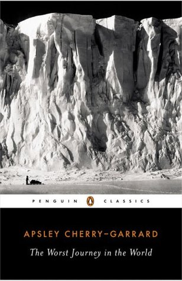

The Worst Journey in the World
Reseña por Jorge I. Zuluaga

Ver reseña en GoodReads (necesita cuenta)
Después de leer este libro (y creo que por un buen tiempo), me encantaría poder ser transportado a la cabaña que Robert Falcon Scott y sus exploradores científicos construyeron en 1910 en el cabo Evans, de la helada isla de Ross en la Antártida.
O tal vez pediría que me transportaran a la barrera de hielo de Ross, quizá al punto más cercano en el que tres hombres muy valientes, incluyendo el mismo Scott, perdieron su vida por frío e inanición después de regresar del Polo Sur en la primera y única expedición netamente científica a aquel inhóspito lugar a principios de los años 1900.
¿O qué les parece ser transportados al mismo Polo Sur, hoy ocupado por sofisticadas instalaciones e instrumentos científicos, tan solo para comprobar las agrestes condiciones de temperatura, falta de aire e irregularidad del terreno descritas en los diarios de Scott y los valientes hombres que lo acompañaron hasta los 90 grados de latitud en una caminata de 2900 km? (En contraste, el Polo Norte está a 600 km del pueblo más cercano en Canadá).
Y, naturalmente, intentaría que me llevaran, así fuera por unos pocos minutos y ojalá durante los oscuros y fríos meses del invierno antártico (julio), al cabo Crozier (en la misma isla de Ross), justo al frente del hielo de la gran barrera de Ross, sobre la que ocurre uno de los más extraños milagros del mundo natural: el nacimiento de cientos o miles de pequeños pingüinos emperadores en la peor temporada invernal del planeta.
Es justamente allí y en un oscuro y frío invierno de 1911, y no a través de una máquina de ciencia ficción o protegidos por sofisticados sistemas de calefacción o trajes de la era espacial, donde viajaron Apsley Cherry-Garrard (el autor de este libro) y dos hombres más, Bowers y Wilson (quienes murieron de hambre y frío con Scott al año siguiente, en 1912), en el que es todavía considerado el peor viaje en la historia de la exploración de la Tierra.
Conocí este libro por primera vez en el texto "Hielo: Bitácora de una expedición antártica" (¡también muy recomendado!) de la gran periodista científica Ángela Posada-Swafford. En su libro, Ángela clasifica esta narración como una de las más increíbles y apasionantes que se hayan escrito jamás sobre la exploración antártica y, en general, sobre los más épicos viajes de exploración en la historia.
Después de leerlo con "paciencia", no puedo más que confirmar la apreciación de Ángela, que creo es también la que comparten decenas, sino cientos de miles de lectores en el mundo que se han sumergido en las más de 450 páginas de este libro centenario, para ser transportados a los lugares y al cuerpo de aquellos valientes que, sin ninguna otra razón que su amor por la ciencia y las aventuras, "descendieron" a una de las regiones más inhóspitas y mortales del planeta (todavía lo es, aun hoy en la era de la aviación y los nuevos materiales).
Y digo con "paciencia" (y de allí mi calificación de cuatro estrellas en lugar del máximo) porque, de la misma manera que se deben reconocer las bondades del libro (una buena y reconocida calidad literaria, al menos para un libro de exploración, una impresionante precisión científica en las descripciones y la interesante capacidad para atraparte en aventuras completamente ajenas a la experiencia cotidiana), también hay que decir que el libro no es fácil de leer.
Estimo que entre un 40 y un 50 % del libro consiste en textos literales tomados de los diarios de los exploradores, que si bien no son malos o aburridos por sí mismos (al contrario, se sorprende uno de que estas personas sacaran tiempo en sus atribuladas aventuras para escribir tan bien líneas que serían leídas por mucho tiempo), hay que reconocer que esos diarios están llenos de detalles excesivos de los que podría prescindirse para contar la historia.
Hay capítulos enteros narrando día a día cada salida de exploración, lo que comieron, lo que durmieron, la distancia que recorrieron, cada pequeño accidente, el estado del clima o los colores del cielo. Y si bien hay muchas de esas salidas que ameritan el tiempo de lectura, por ejemplo, aquella de la que se supone trata el libro (el viaje de invierno al cabo Crozier para recuperar algunos huevos de pingüino emperador) o el triste viaje de regreso del Polo de Scott y sus hombres, hay otras que en realidad no son tan relevantes para la historia.
No me cabe la menor duda de que la persona que lea con atención estos diarios y sea transportada hoy con los pertrechos de la época, sabría qué hacer, qué y cómo cocinar, cómo vestirse, qué cuidados tener al caminar por los azarosos territorios del hielo antártico, etc. Personalmente, me siento, después de leer con paciencia cada línea de estos diarios, un experto de un mundo que ya no existe.
Una cosa es clara: el libro no es solo sobre la expedición de invierno de 1911 para conseguir los huevos del pingüino. En realidad, este es un libro sobre la aventura científica asombrosa de Scott y más de 60 hombres a bordo del Terra Nova, que entre el verano de 1910 y el otoño de 1912 torearon las implacables condiciones de la Antártida para recoger muestras biológicas, recabar datos meteorológicos y oceanográficos, recuperar las primeras muestras geológicas de un continente inexplorado, alcanzar el Polo (a la larga, el menor de los objetivos) y, por supuesto, conseguir los primeros embriones de pingüino emperador conocidos por la ciencia.
El libro es un excelente "vademécum" de citas literarias sobre la exploración y la naturaleza humana; está lleno de reflexiones honestas y directas:
- "La exploración polar es la forma más radical y al mismo tiempo más solitaria de pasarlo mal que se ha concebido."
- "Puede que el camino del infierno esté empedrado de buenas intenciones, pero a nosotros nos parecía que el infierno propiamente dicho debía estar empedrado más o menos de la misma manera que la [Antártida]."
- "El hombre que no pasa miedo carece de sentimientos, de sensibilidad, de nervios; en el fondo es un estúpido."
- "El infierno correspondiente en la Tierra se encuentra en los mares del Sur."
- "El buen explorador de los polos tiene la mayoría de los defectos y las virtudes del buen marido."
- "Las personas nerviosas acaban las cosas que empiezan, pero a veces lo pasan fatal mientras lo hacen."
- "La ciencia es el sólido cimiento de todo esfuerzo."
- "Esto me convenció de que Dante estaba en lo cierto cuando situó los círculos de hielo por debajo de los círculos de fuego."
- "Cualquier cosa cierta es mejor que una caminata incierta."
- "Por muy incierta que sea la Barrera [de Ross], la variedad del cielo es infinita, y no creo que exista ningún otro sitio en el mundo donde se vean colores más hermosos."
- "Son muchos los motivos que impulsan al hombre a ir a los polos, y el acicate intelectual está presente en todos ellos; pero en el fondo lo que cuenta es el deseo de saber, a secas."
- "La exploración es la expresión física de la pasión intelectual."
Ármense de paciencia y lean este libro. Aquellos exploradores que sacrificaron su salud e incluso su vida por esa expresión física de la máxima pasión intelectual merecen que sus historias sean conocidas por siempre.
Cada rincón de la superficie de la Tierra ya ha sido explorado y es posible que no vuelvan a haber muchos más Scotts. Pero recuerden que delante está Marte.